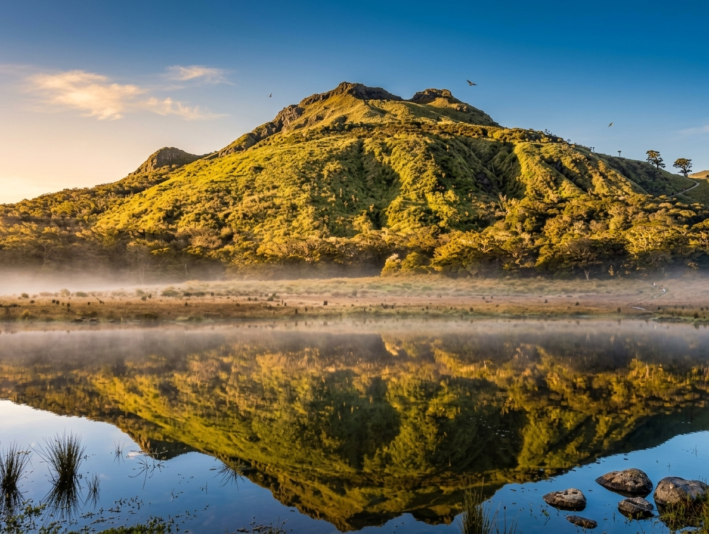
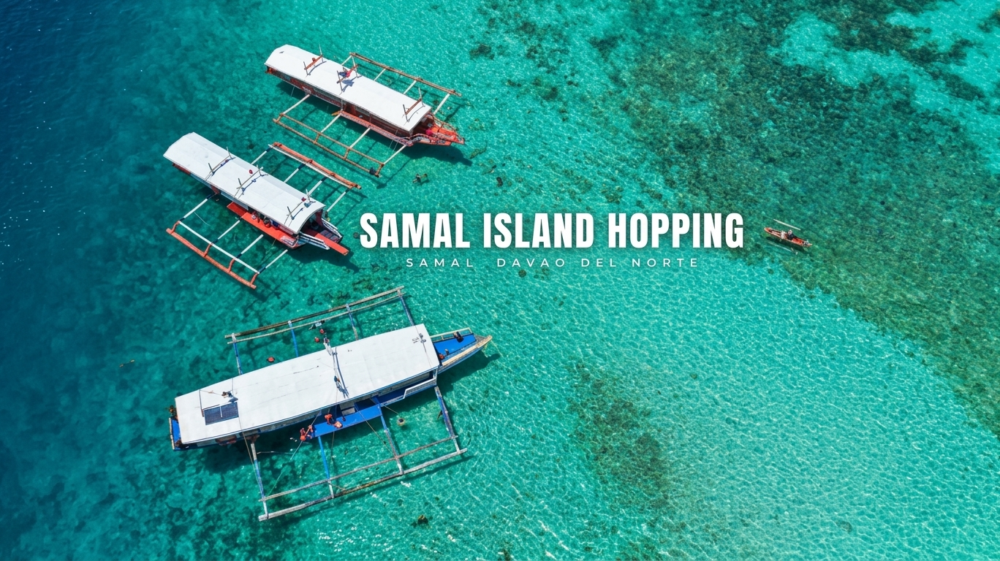
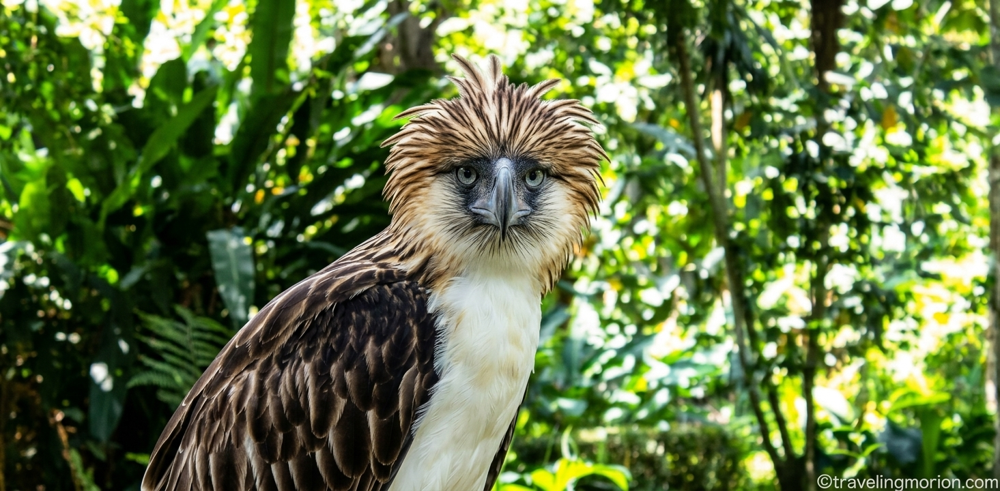
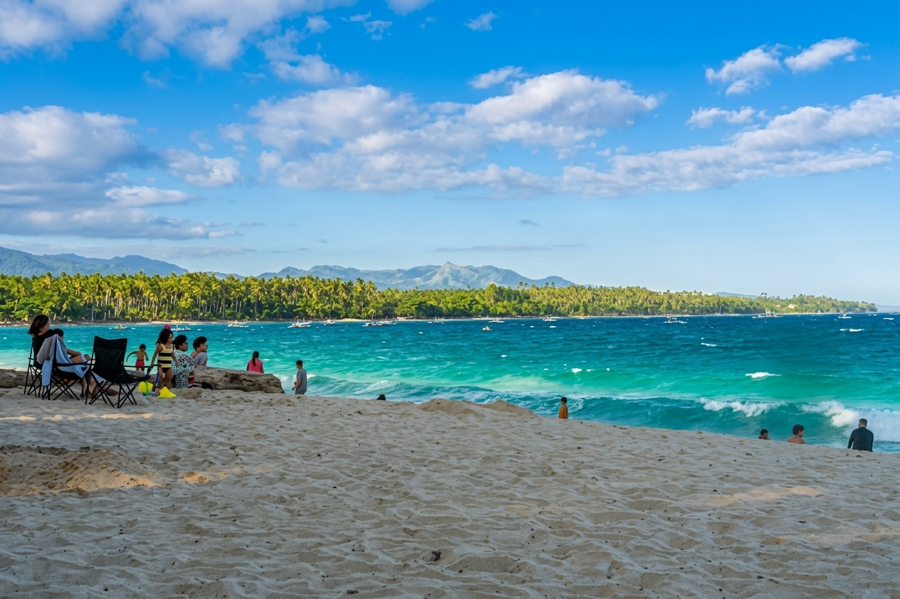
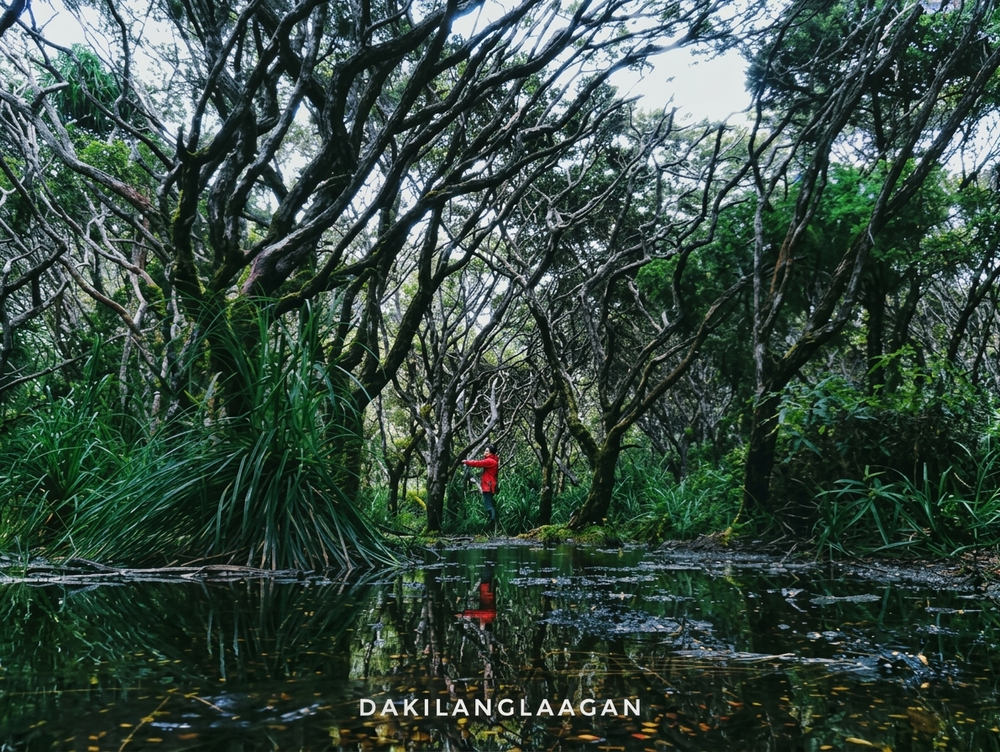
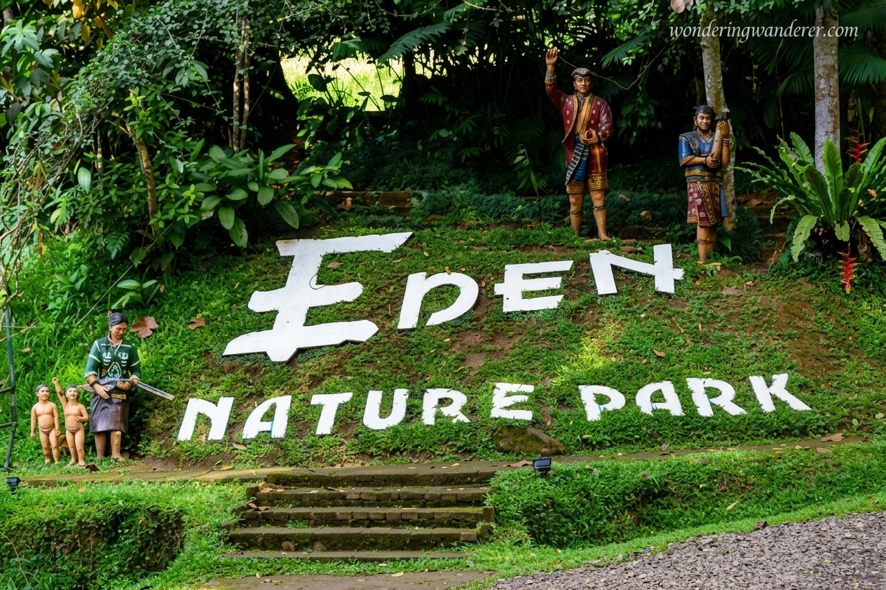

Welcome to Region XI
Davao Region sits in the southeastern corner of Mindanao and is made up of five provinces: Davao de Oro, Davao del Norte, Davao del Sur, Davao Occidental and Davao Oriental, along with Davao City, its regional center. Here you can climb Mount Apo, the highest mountain in the country, walk through a UNESCO World Heritage forest on Mount Hamiguitan, island-hop around Samal, and taste durian at its source. The region is also known for the Kadayawan Festival each August, a celebration of harvest and the culture of its indigenous peoples.
Top tourist spots
See all destinations





Things to do
-
Hike
Trek Mount Apo or Hamiguitan with licensed local guides.
-
Island-hop
Spend a day on Samal's beaches, coves and snorkeling spots.
-
Meet wildlife
Visit the Philippine Eagle Center and the region's nature parks.
-
Eat local
Try fresh durian, pomelo and grilled tuna at the markets.
Visit in August for Kadayawan
Davao City's harvest festival fills the streets with parades, flower floats, street dancing and the traditions of the region's indigenous peoples. Book your stay early, since August is the busiest month.
See festivals and activitiesReady to go?
Pick your dates, choose your stops and build your Davao itinerary.
Start planning